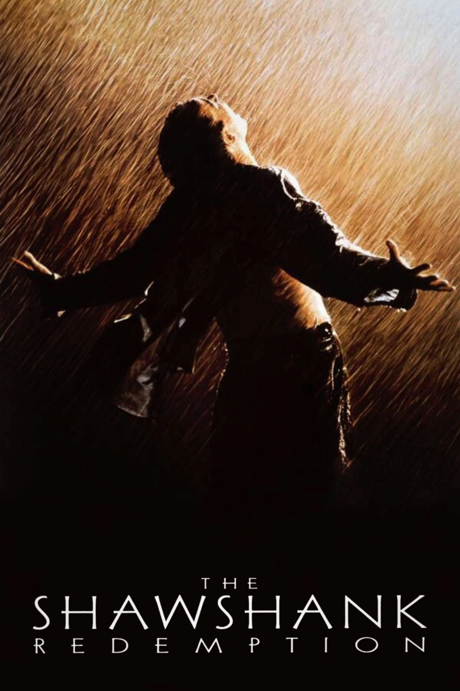

The Shawshank Redemption

Listemizin başını Shawshank Redemption çekiyor. Her malın bir alıcısı vardır, birinin sevmediği bir filmi başkası sever ve bu böyle gider. Bazılarının seveni daha fazladır tabi. Fakat konu bu film olunca sevmeyen bulmak zor çünkü herkes bu filmde kendinden bir parça bulmuştur. Stephen King'in kaleminden, ve Frank Darabont'un vizyonundan Andy Dufrense'nin neler çektiğine şahit olduğumuz bir film 3.3 milyon oya göre bir numaradır.